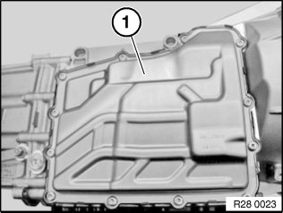
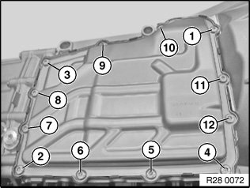
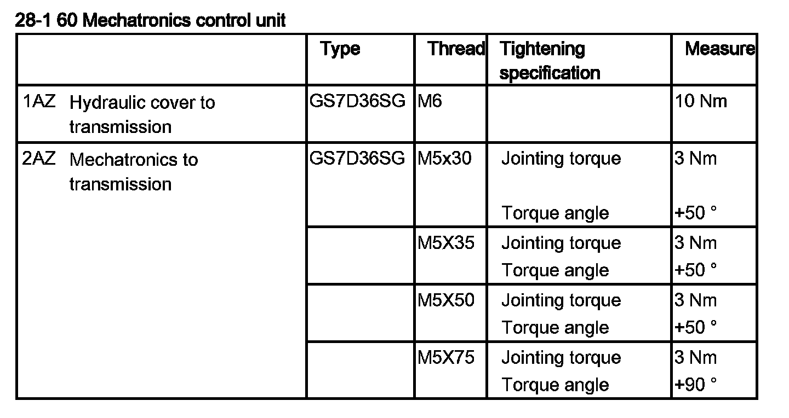

Fluid Pan: Service and Repair
28 60 030 Removing and installing/replacing the hydraulic cap (GS7D36SG)Important!
It is essential to adhere to conditions of absolute cleanliness.
Any dirty parts must be cleaned before the hydraulic cap is loosened.
After completion of work, check transmission oil level.
Use only the approved transmission oil.
Failure to comply with this instruction will result in serious damage to the twin-clutch gearbox.
Important!
Read and comply with notes on protection against electrostatic discharge (ESD protection).
Necessary preliminary work:
^ Remove twin clutch transmission

Place twin clutch transmission on a suitable surface.
To prevent the transmission oil from spilling out, make sure that the hydraulic cap points upward.
Release screws.
Remove hydraulic cover (1).
Installation note:
Replace seal.
Replace screws.

Installation of hydraulic cap:
Make sure seal is exactly seated.
It is mandatory to comply with the specified order of screw connections 1-12.
Tightening torque 28 60 1AZ.
